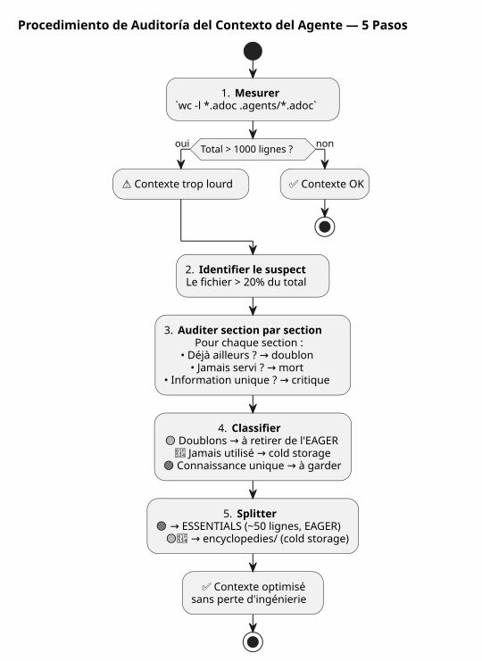

Auditoría de Contexto Agente: cuando su propia gobernanza se convierte en el problema y cómo repararla sin perder nada
Publié le 27 April 2026
- La escena: sesión 051, algo chirría
- La auditoría: desglosar las 627 líneas
- El miedo de perder la ingeniería
- La solución: split enciclopédico
- El contenido del archivo ESSENTIALS
- El resultado : -50% de contexto EAGER
- ¿Por qué se llama la carpeta `encyclopedies/
- La continuación lógica de la serie
- Lo que habría hecho diferente
- El guía para auditar su propio contexto
- Una gobernanza viva
- Enlaces
Has pasado semanas construyendo una gobernanza de agente impecable. Eager/Lazy, procedimiento de fin de sesión, copias de seguridad rotativas. El sistema funciona. Entonces un día, el agente se vuelve lento. Las respuestas están diluidas. Mides: 1414 líneas cargadas automáticamente. Y lo peor es que el culpable no es el código, ni el backlog, ni los archivos de sesiones. El culpable es el archivo que documenta tu método.
- toc
-
[]
La escena: sesión 051, algo chirría
30 de abril de 2026, 16:00. Estoy en plena sesión en`magic-stick`, mi proyecto de creación de ISO Linux live. El agente Opencode cargó automáticamente mis archivos Eager como de costumbre —AGENT.adoc, PROMPT_REPRISE.adoc, .agents/INDEX.adoc. Todo está normal.
Excepto que las respuestas son blandas. El agente tarda dos segundos más en razonar. Se le olvida un detalle que tenía delante hace tres mensajes. No es un crash, no es un error — es una degradación lenta, del tipo que no se nota de inmediato.
Ya lo había experimentado en la sesión 048, cuando descubrí que los archivos de gobernanza pesaban 5200 líneas acumuladas. Entonces conceptualicé el mecanismo Hot/Warm/Cold con su ventana deslizante de 10 sesiones, sus olas frías idénticas, su sensor de dos disparadores. El problema estaba resuelto. En teoría.
Pero ahora estamos en la sesión 051. La rotación de respaldo ha tenido lugar correctamente — los archivos EAGER han pasado de 2087 a 500 líneas. Sin embargo, el contexto sigue siendo pesado. Algo se me escapa.
Abro un terminal y escribo:
wc -l AGENT.adoc AGENT_MODUS_OPERANDI.adoc PROMPT_REPRISE.adoc \
.agents/INDEX.adoc .agents/SESSIONS_HISTORY.adoc \
.agents/archives/COMPLETED_TASKS_ARCHIVE_2026-04.adoc 287 AGENT.adoc
627 AGENT_MODUS_OPERANDI.adoc
51 PROMPT_REPRISE.adoc
218 .agents/INDEX.adoc
18 .agents/SESSIONS_HISTORY.adoc
213 .agents/archives/COMPLETED_TASKS_ARCHIVE_2026-04.adoc
1414 total1414 líneas. La rotación de backup ha podado bien en INDEX, SESSIONS_HISTORY y COMPLETED_TASKS — están limpios. Pero hay un elefante en la habitación que no había visto:627 líneasen un solo archivo.AGENT_MODUS_OPERANDI.adoc.
Este archivo, es el que escribí en la sesión 1 para documentar la estrategia Eager/Lazy. Es el manual del método. Y se ha convertido, por sí solo, en el 44% del contexto EAGER.
Failed to generate image: PlantUML preprocessing failed: [From <input> (line 9) ] @startuml skinparam backgroundColor #FEFEFE title Contexto EAGER — 1414 líneas rectangle "AGENT_MODUS_OPERANDI **627 líneas (44%)**" as MOD #FFCDD2 rectangle "AGENT.adoc\n287 líneas (20%)" as AG #BBDEFB rectangle "INDEX.adoc 218 líneas (15%)" as IDX #C8E6C9 ^^^^^ Syntax Error? (Assumed diagram type: activity) @startuml skinparam backgroundColor #FEFEFE title Contexto EAGER — 1414 líneas rectangle "AGENT_MODUS_OPERANDI **627 líneas (44%)**" as MOD #FFCDD2 rectangle "AGENT.adoc\n287 líneas (20%)" as AG #BBDEFB rectangle "INDEX.adoc 218 líneas (15%)" as IDX #C8E6C9 rectangle "COMPLETED_TASKS\n213 líneas (15%)" as ARC #FFF9C4 rectangle "PROMPT_REPRISE\n51 líneas (4%)" as PRO #E1BEE7 rectangle "SESSIONS_HISTORY 18 líneas (1%)" as HIS #FFE0B2 note bottom of MOD Le fichier qui documente la méthode est devenu le plus gros poste de dépense end note @enduml
La ironía es total. El archivo diseñado para ahorrar contexto se ha convertido en el principal consumidor de contexto. Es como si el manual de uso de tu coche pesara más que el motor.
La auditoría: desglosar las 627 líneas
Decido hacer una auditoría sección por sección. No para eliminar — para comprender lo que merece estar en EAGER y lo que podría vivir en otro lugar sin pérdida de conocimiento.
Aquí está la estructura exacta de`AGENT_MODUS_OPERANDI.adoc`y lo que encuentro :
Sección |
Líneas |
Contenido |
Ya presente en… |
P1 — Visión general |
64 |
Problema resuelto, principios fundamentales, analogía cuadro de mando vs manual |
— |
P2 — Estructura de los archivos |
97 |
Arborescencia, política de carga, cuándo cargar qué |
— |
P3 — Reglas absolutas |
34 |
Git prohibido, comandos destructivos prohibidos, secretos prohibidos |
|
P4 — Ciclo de vida de la sesión |
133 |
Plantilla apertura, normas de trabajo, 6 pasos fin de sesión, lista de verificación |
|
P5 — Métricas y umbrales |
49 |
Sesión ideal (15-30 min, 1-3 archivos), signos de alerta |
— |
P6 — Tipos de sesiones |
72 |
Tabla de detección, formato de propuesta, excepciones |
— |
P7 — Mejora continua |
39 |
Métricas de seguimiento, revisión semanal |
— |
P8 — Checklist de arranque |
13 |
Bootstrap nuevo proyecto |
— |
P9 — Referencias |
30 |
Archivos de referencia, recursos externos |
|
Anexos A+B |
42 |
Glosario, historial versiones |
— |
El veredicto es inapelable:
-
Duplicados completos(167 líneas) : P3, P4, P9 — todo ya está en`AGENT.adoc` ou
INDEX.adoc, a menudo palabra por palabra -
Nunca consultado en la práctica(215 líneas) : P5, P6, P7, P8, Anexos — de la meta‑gobernancia que nunca se ha utilizado en ninguna sesión
-
Conocimiento único(161 líneas) : P1 y P2 — el vocabulario LAZY/EAGER, la analogía, la política de carga
En 627 líneas,382 son ruido. Y estas 382 líneas se cargan al inicio de cada sesión, consumidas por el agente, diluyendo su atención incluso antes de que yo diga hola.
Failed to generate image: PlantUML preprocessing failed: [From <input> (line 9) ]
@startuml
skinparam backgroundColor #FEFEFE
skinparam defaultTextAlignment center
title Auditoría de AGENT_MODUS_OPERANDI.adoc — 627 líneas
left to right direction
rectangle "🟡 **Duplicados**\n167 líneas (27%)" as DUP #FFF9C4 {
card "P3 — Reglas absolutas
^^^^^
Syntax Error? (Assumed diagram type: class)
@startuml
skinparam backgroundColor #FEFEFE
skinparam defaultTextAlignment center
title Auditoría de AGENT_MODUS_OPERANDI.adoc — 627 líneas
left to right direction
rectangle "🟡 **Duplicados**\n167 líneas (27%)" as DUP #FFF9C4 {
card "P3 — Reglas absolutas
(34 líneas)" as D1
card "P4—Ciclo de vida\n(133 líneas)" as D2
card "P9 — Referencias\n(30 líneas)" as D3
}
rectangle "�🔴 **Nunca consultado**
215 líneas (34%)" as JAM #FFCDD2 {
card "P5 — Métricas
(49 líneas)" as J1
card "P6 — Detección
(72 líneas)" as J2
card "P7 — Mejora
(39 líneas)" as J3
card "P8 — Bootstrap
(13 líneas)" as J4
card "Anexos — Glosario
(42 líneas)" as J5
}
rectangle "�🟢 **Conocimiento único**
161 líneas (26%)" as UNI #C8E6C9 {
card "P1 — Visión general\n(64 líneas)" as U1
card "P2 — Estructura archivos
(97 líneas)" as U2
}
note bottom of UNI
C'est ÇA qu'il faut garder en EAGER.
Le reste → cold storage.
end note
@enduml
Este diagrama es la clave de todo. Los duplicados (amarillo) son ruido puro — el agente los lee dos veces, en dos archivos diferentes. El nunca consultado (rojo) es documentación muerta — escrita con cuidado, nunca utilizada. Solo el verde contiene conocimiento que el agente no puede encontrar en otro lugar.
El miedo de perder la ingeniería
En este punto, tengo la evidencia ante los ojos: debo reducir`AGENT_MODUS_OPERANDI.adoc`. Pero dudo.
Este archivo lo escribí a mano. Cada sección es el resultado de una lección aprendida en una sesión real. La parte P3 nació de un`rm -rf`accidental sobre`bakery-plugin`que me ha costado tokens reales de Firebase. La parte P4 es el resultado de quince sesiones en las que olvidaba archivar y perdí el hilo. El procedimiento de seis pasos no proviene de un libro—proviene del dolor.
Eliminar estas secciones sería tirar el historial de mi propia ingeniería. Las lecciones que las produjeron, las sesiones durante las cuales las descubrí, los errores que nunca quiero volver a cometer. No es texto — es experiencia cristalizada.
Es ahí donde formulo el principio que guiará la solución:
_ Nunca eliminar. Siempre reubicar.El conocimiento no tiene que desaparecer del proyecto. Sólo tiene que no cargarse automáticamente cuando no es necesario. _
La solución: split enciclopédico
El modelo que propongo es simple y se inspira en la forma en que Wikipedia ha crecido: cuando un artículo se vuelve demasiado largo, no lo cortamos — creamos un artículo detallado y mantenemos un resumen en el artículo principal.
Para`AGENT_MODUS_OPERANDI.adoc`, esto da:
-
Extraerlos 161 líneas de conocimiento único (P1 + P2) en un nuevo archivo`LAZY_EAGER_ESSENTIALS.adoc`— compactado a ~50 líneas, estrictamente EAGER
-
Renombrar
AGENT_MODUS_OPERANDI.adocen.agents/encyclopedies/LAZY_EAGER_ENCYCLOPEDIE.adoc— el archivo original de 627 líneas, preservado intact, en almacenamiento en frío -
Nunca cargarel archivo enciclopedia automáticamente — está allí para el humano, para la destilación futura, para el agente que se invocará dentro de seis meses con un mejor modelo
Failed to generate image: PlantUML preprocessing failed: [From <input> (line 8) ]
@startuml
skinparam backgroundColor #FEFEFE
skinparam defaultTextAlignment center
title Split Enciclopédico — AGENT_MODUS_OPERANDI
left to right direction
rectangle "**AGENT_MODUS_OPERANDI.adoc**
^^^^^
Syntax Error? (Assumed diagram type: class)
@startuml
skinparam backgroundColor #FEFEFE
skinparam defaultTextAlignment center
title Split Enciclopédico — AGENT_MODUS_OPERANDI
left to right direction
rectangle "**AGENT_MODUS_OPERANDI.adoc**
627 líneas
(antes de dividir)" as BEFORE #FFCDD2 {
}
rectangle " " as ARROW1
rectangle " " as ARROW2
rectangle "**LAZY_EAGER_ESSENTIALS.adoc**
**~50 líneas — EAGER**" as ESS #C8E6C9 {
card "P1 condensada
(15 líneas)" as E1
card "P2 condensada
(35 líneas)" as E2
}
rectangle ".agents/enciclopedias/\n**LAZY_EAGER_ENCICLOPEDIA.adoc**\n627 líneas — FRÍO" as ENC #BBDEFB {
card "P1 a Anexos\n(integral, intacto)" as C1
}
BEFORE -[#4CAF50]-> ESS : "Extracción de
conocimiento crítico"
BEFORE -[#2196F3]-> ENC : "Preservación integral
de la ingeniería"
note bottom of ESS
Chargé automatiquement
en début de session
→ L'agent comprend le vocabulaire
end note
note bottom of ENC
Jamais chargé automatiquement
Consultable par l'humain
Matériau brut pour distillation future
end note
@enduml
El nombre`encyclopedies/`No es trivial. Una enciclopedia, no es un archivo — es una colección de conocimiento organizada, consultable pero no portátil. No se lee la Enciclopedia Universalis en el metro. La guardamos en la biblioteca, y vamos cuando tenemos una pregunta precisa.
Es exactamente el papel de esta carpeta: una biblioteca de referencia fría, estructurada, exhaustiva — que el agente no toca automáticamente.
El contenido del archivo ESSENTIALS
Así se ve concretamente el nuevo archivo`LAZY_EAGER_ESSENTIALS.adoc`, extraído y compactado a partir de P1 y P2 :
= Stratégie LAZY/EAGER — Principes Essentiels
[abstract]
Ce fichier définit la stratégie de gestion du contexte agent.
Chargé automatiquement (EAGER) en début de session.
== Principes
|===
| EAGER | LAZY
| Tableau de bord | Manuel du propriétaire
| Chargé automatiquement | Chargé sur demande
| <= 100 lignes, <= 10k tokens | Illimité, détaillé
| Règles absolues, mission courante | Archives, historique, références
|===
== Politique de Chargement
|===
| Fichier | Type | Quand charger
| PROMPT_REPRISE.adoc | EAGER | Début session (auto)
| *_ESSENTIALS.adoc | EAGER | Début session si EPIC active
| .agents/INDEX.adoc | EAGER | Début session (auto)
| *_REFERENCE.adoc | LAZY | Sur besoin (détails architecture)
| .agents/sessions/N-*.adoc | LAZY | Sur demande (détails session)
| .agents/encyclopedies/*.adoc | COLD | Jamais auto (humain seulement)
|===
== Comment l'Agent Sait Quoi Charger
Début session → PROMPT_REPRISE + INDEX + ESSENTIALS actifs.
Besoin de détails → charger les *_REFERENCE et sessions/ en LAZY.
Connaissance froide → encyclopedies/, jamais automatique.Cincuenta líneas. Eso es todo lo que el agente necesita para comprender la mecánica. Todo lo demás — el historial de las lecciones, las analogías detalladas, los procedimientos paso a paso, los anexos — vive en la enciclopedia.
Y lo más importante:nada ha sido eliminado. Las 627 líneas de ingeniería siguen estando allí, en`.agents/encyclopedies/LAZY_EAGER_ENCYCLOPEDIE.adoc`. Están simplemente colocadas en la biblioteca en vez de sobre la encimera.
El resultado : -50% de contexto EAGER
Antes del split :
287 AGENT.adoc
627 AGENT_MODUS_OPERANDI.adoc
51 PROMPT_REPRISE.adoc
218 .agents/INDEX.adoc
18 .agents/SESSIONS_HISTORY.adoc
213 .agents/archives/COMPLETED_TASKS_ARCHIVE_2026-04.adoc
1414 totalDespués del split :
287 AGENT.adoc
50 LAZY_EAGER_ESSENTIALS.adoc ← remplace 627 lignes
51 PROMPT_REPRISE.adoc
218 .agents/INDEX.adoc
18 .agents/SESSIONS_HISTORY.adoc
213 .agents/archives/COMPLETED_TASKS_ARCHIVE_2026-04.adoc
837 total ← -41%Failed to generate image: PlantUML preprocessing failed: [From <input> (line 6) ] @startuml skinparam backgroundColor #FEFEFE title Contexto EAGER después de la división enciclopédica — 837 líneas (-41%) rectangle "AGENT.adoc 287 líneas (34%)" as AG #BBDEFB ^^^^^ Syntax Error? (Assumed diagram type: activity) @startuml skinparam backgroundColor #FEFEFE title Contexto EAGER después de la división enciclopédica — 837 líneas (-41%) rectangle "AGENT.adoc 287 líneas (34%)" as AG #BBDEFB rectangle "INDEX.adoc\n218 líneas (26%)" as IDX #C8E6C9 rectangle "COMPLETED_TASKS\n213 líneas (25%)" as ARC #FFF9C4 rectangle "PROMPT_REPRISE 51 líneas (6%)" as PRO #E1BEE7 rectangle "ESSENTIALS 50 líneas (6%)" as ESS #A5D6A7 rectangle "SESSIONS_HISTORY\n18 líneas (2%)" as HIS #FFE0B2 note bottom of ESS De 627 → 50 lignes 577 lignes d'ingénierie préservées en cold storage Rien de perdu. Tout de relocalisé. end note @enduml
El mayor consumidor (AGENT_MODUS_OPERANDI, 627 líneas) fue reemplazado por un archivo de 50 líneas. La ganancia es inmediata: 577 líneas de contexto liberadas. El agente respira.
Y en`.agents/encyclopedies/`, el archivo original de 627 líneas espera. Intacto. Con todas sus secciones — incluyendo aquellas que son duplicados, incluyendo aquellas que nunca han sido utilizadas. Porque algún día, un mejor modelo o un data scientist humano querrá cruzar estos ángulos, estas redundancias asumidas, estas lecciones aprendidas. Y ese día, la materia prima estará allí.
¿Por qué se llama la carpeta `encyclopedies/
La elección del nombre no es cosmética. Codifica la filosofía del mecanismo.
Un archivo (archives/) contiene datos históricos organizados cronológicamente — como los COMPLETED_TASKS mensuales. Un backup (backup/) es una captura con marca de tiempo — una copia de seguridad de un estado anterior.
Una enciclopedia, es otra cosa. Es una colección de conocimiento temático, estructurada por tema, exhaustiva pero no lineal. No se lee una enciclopedia del principio al final. Se sumerge para responder a una pregunta precisa.
Es exactamente el contrato de este expediente:
Expediente |
rol |
Acceso |
granularidad |
|
Datos históricos (tareas completadas por mes) |
LAZY, estructurado |
Cronológico |
|
Instantáneas frías (olas de 10 sesiones) |
COLD, copia completa |
Cronológico |
|
Conocimiento temático exhaustivo (metodología, patterns) |
COLD, nunca automático |
Temática |
Esta distinción evita el desorden. Cada archivo sabe dónde debe vivir según lo que contiene, no según cuando fue creado.
La continuación lógica de la serie
Si ha leído los dos primeros artículos, aquí tiene cómo encajan las tres piezas:
Failed to generate image: PlantUML preprocessing failed: [From <input> (line 9) ]
@startuml
skinparam backgroundColor #FEFEFE
skinparam defaultTextAlignment center
skinparam wrapWidth 220
title Trilogía de la Gobernanza del Agente
left to right direction
package "�📖 **Artículo 0108**
^^^^^
Syntax Error? (Assumed diagram type: class)
@startuml
skinparam backgroundColor #FEFEFE
skinparam defaultTextAlignment center
skinparam wrapWidth 220
title Trilogía de la Gobernanza del Agente
left to right direction
package "�📖 **Artículo 0108**
Estrategia Eager/Lazy" as A1 #E8F5E9 {
card "Agente de memoria
entre sesiones" as M1
card "Archivos EAGER\n(auto-cargados)" as M2
card "Archivos LAZY\n(a petición)" as M3
card "Procedimiento 6 pasos" as M4
}
package "�🧊 **Article 0110**\nMecanismo Hot/Warm/Cold" as A2 #FFF9C4 {
card "Envejecimiento
del contexto" as V1
card "Ventana deslizante
10 sesiones" as V2
card "Ola fría
idéntica" as V3
card "Sensor a
dos disparadores" as V4
}
package "�🔍 **Artículo 0111**
Auditoría + Solución Enciclopédica" as A3 #BBDEFB {
card "Auditoría de archivos
EAGER" as E1
card "Identificación\ndel despilfarro" as E2
card "Split
ESSENTIALS/enciclopedia" as E3
card "Preservación
de la ingeniería" as E4
}
A1 --> A2 : "La memoria crece
→ se necesita un mecanismo
de envejecimiento"
A2 --> A3 : "El envejecimiento no basta
→ es necesario auditar lo que
merece estar en EAGER"
note bottom of A3
✅ Les trois couches sont en place
sur 6 projets actifs
end note
@enduml
-
0108responde a: « ¿Cómo darle una memoria al agente entre dos sesiones ?
-
0110responde a: « ¿Cómo evitar que esta memoria ahogue al agente?
-
0111responde a : «¿Y si el problema no es el tamaño de los archivos, sino lo que hemos elegido poner en EAGER?
El primer artículo construyó la estructura. El segundo añadió el mecanismo de envejecimiento. El tercero audita el contenido—y descubre que la metodología misma se ha convertido en el problema.
Lo que habría hecho diferente
En retrospectiva, veo el error de diseño inicial.`AGENT_MODUS_OPERANDI.adoc`Fue creado como un documento único — un manifiesto. Era el enfoque correcto para formalizar el pensamiento. Pero una vez formalizado el pensamiento, el documento debería haberse dividido inmediatamente: lo esencial en EAGER, lo exhaustivo en cold.
Yo no lo hice porque estaba orgulloso del documento. 627 líneas de ingeniería pura, escritas a mano, cada sección fruto de una lección de sesión. Era mi obra. Y como todo autor, tuve dificultad para recortarla.
La lección :No es porque un documento sea bueno que debe cargarse automáticamente. La calidad del contenido no tiene relación con su pertinencia para el contexto inmediato del agente.
Hoy, la regla es sencilla: cualquier documento con más de 100 líneas en el contexto EAGER es sospechoso. Merece una auditoría. No una condenación — una auditoría. Y la pregunta nunca es « ¿deberíamos borrarlo ? » pero « ¿deberíamos cargarlo en cada sesión ?».
El guía para auditar su propio contexto
Si ha seguido los dos primeros artículos y ha implementado su propia gobernanza Eager/Lazy, aquí tiene un procedimiento de auditoría en cinco pasos :
-
Medir:`wc -l`en todos sus archivos EAGER. El total debería ser menos de 1000 líneas.
-
Identificar el más grande: el archivo que pesa más del 20% del total es el sospechoso número uno.
-
Auditar sección por sección: para cada sección, pregúntate « ¿Esta información ya está en otro lugar? ¿El agente ya la ha leído en otro archivo? ¿Ha servido en las últimas 5 sesiones ?
-
Clasificador: duplicado, nunca usado, conocimiento único.
-
Separar o relocalizar: lo que es único y crítico → ESSENTIALS compactado. Todo lo restante →
encyclopedies/.

Este procedimiento lleva 15 minutos. En un proyecto de 50 sesiones, ahorra cientos de tokens por sesión futura. El ROI es inmediato.
Una gobernanza viva
Lo que esta serie de tres artículos me ha enseñado, es que la gobernanza de agentes no es un producto terminado. Es unorganismo vivoElla crece con el proyecto. Ella contrae enfermedades de crecimiento. Ella requiere chequeos regulares.
La sesión 048 reveló que los archivos se inflan. La sesión 051 reveló que la metodología misma se infla. La sesión 060 probablemente revelará otra cosa. Es normal. Es sano. Una gobernanza que nunca se cuestiona es una gobernanza muerta.
Los tres mecanismos implementados — Eager/Lazy, Hot/Warm/Cold, split enciclopédico — forman un sistema de defensa en profundidad contra la saturación del contexto. Ninguno es suficiente por sí solo. Juntos, se complementan :
-
Ansioso/Perezosoestructura la información por disponibilidad
-
Caliente/Tibio/Fríoestructura la información por frescura
-
Auditoría enciclopédicaestructura la información por densidad
Failed to generate image: PlantUML preprocessing failed: [From <input> (line 6) ] @startuml skinparam backgroundColor #FEFEFE skinparam nodeBackgroundColor #E3F2FD title Defensa en Profundidad contra la Saturación del Contexto node "**Contexto Agente** ^^^^^ Syntax Error? (Assumed diagram type: sequence) @startuml skinparam backgroundColor #FEFEFE skinparam nodeBackgroundColor #E3F2FD title Defensa en Profundidad contra la Saturación del Contexto node "**Contexto Agente** ~800 líneas sano" as CTX #C8E6C9 node "Capa 1 **EAGER / LAZY**" as C1 #BBDEFB node "Capa 2\n**HOT / WARM / COLD**" as C2 #BBDEFB node "Capa 3 **ESSENCIALES / ENCICLOPEDIA**" as C3 #BBDEFB CTX --> C1 : "Estructura por **disponibilidad**" CTX --> C2 : "Estructura por\n**frescura**" CTX --> C3 : "Estructura por\n**densidad**" note bottom of C3 Les trois couches sont nécessaires. Aucune n'est suffisante seule. end note @enduml
Con estas tres capas, el contexto agente sobre`magic-stick`pasó de 2087 líneas (antes de cualquier optimización) a aproximadamente 800 líneas — una división por 2,6. Sin haber perdido ni una sola línea de documentación, ni un solo archivo de sesión, ni una sola lección aprendida.
Todo está aquí. Solo mejor organizado.
Enlaces
-
Artículo 0108 — Estrategia Eager/Lazy :Gobernar un agente IA con AsciiDoc
-
Artículo 0110 — Mecanismo Hot/Warm/Cold:Ventana deslizante y onda fría
-
Mi sitio: https://cheroliv.com
-
El proyecto`magic-stick`: https://github.com/cheroliv/magic-stick
El conocimiento no tiene que desaparecer. Solo tiene que no estar cargada cuando no es necesario.